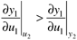

| [ Team LiB ] |
|
13.5 Properties and Application of the RGASum of Rows and Columns Property of the RGANotice that Equation (13.24) yields the following relationships
This property for 2 x 2 systems is general for n x n systems. That is, each row of the RGA sums to 1.0 and each column of the RGA sums to 1.0. Then, for a 2 x 2 system, only one relative gain must be calculated to find the entire array, For a 3 x 3 system, only four of the nine elements would need to be calculated. In practice, they are all calculated simultaneously using (13.23). Use of RGA to Determine Variable PairingIt is desirable to pair output i and input j such that lij is as close to 1 as possible. Example 13.2: RGA for Variable PairingConsider a relative gain array, We would pair y1 with u1 and y2 with u2 in this case. However, if we would pair y1 with u2 and y2 with u1. Two Input–Two Output SystemsIt is easy to show the two possible cases for the relative gain array of a 2 x 2 system. If there are an odd number of positive elements in G(0), then That is, for an odd number of positive elements in the process gain matrix, all the relative gains will be between 0 and 1. If there are an even number of positive elements in G(0), then This means that for an even number of positive elements in the process gain array, all the relative gains will be outside the 0–1 range. Implications for the Sign of a Relative GainFirst of all, we can state that if l11 was negative, we would not want to pair input 1 with output 1. Let us use the following reasoning. Assume that the open-loop gain between input 1 and output 1 (g11) is positive; this implies that the controller gain is also positive. A negative relative gain tells us that the gain between input 1 and output 1 with output 2 perfectly controlled (that is, loop 2 closed) is negative. This means that if loop 2 is closed, we need a negative controller gain on loop 1. However, we noted before that if loop 2 is open, we need a positive controller gain on loop 1. It is not desirable to have a control system where you have to change the sign of the controller gain depending on whether the other loops are open or closed, so the bottom line is the following: We do not want to pair output i and input j if lij is negative. The results for a 2 x 2 system indicate that if l11 > 1 then l12 = l21 < 0. Also, if 0 < l11 < 1, then 0 < l12 < 1. Let us think about the differences between having a l11 greater than 1 and having a l11 less then 1. If l11 > 1, then . This tells us that the gain between u1 and y1 is larger with loop 2 open than with loop 2 closed.
However,
If 0 < l11 < 1, then . This tells us that the gain between u1 and y1 is smaller with loop 2 open than with loop 2 closed.
However,
Midchapter Summarizing RemarksYou must be careful when tuning SISO loops in a multiple input–multiple output (MIMO) system, because the other loops in the system can greatly affect the gain between the input-output variables under consideration. Also, note that we have only been concerned with static (steady-state) effects. Dynamic interaction has a major effect when control systems are tuned. Our experience is that one rarely reverses a pairing decision based on the steady-state relative gain, when one considers the dynamic effects. The primary result from a dynamic interaction analysis is to recognize additional interaction affects above the steady-state ones and either accept the degradation in control system performance, or use a "true" multivariable control system design technique rather than separate SISO controllers. Sometimes the interaction and other problems will be so severe that only one loop can be closed. |
| [ Team LiB ] |
|